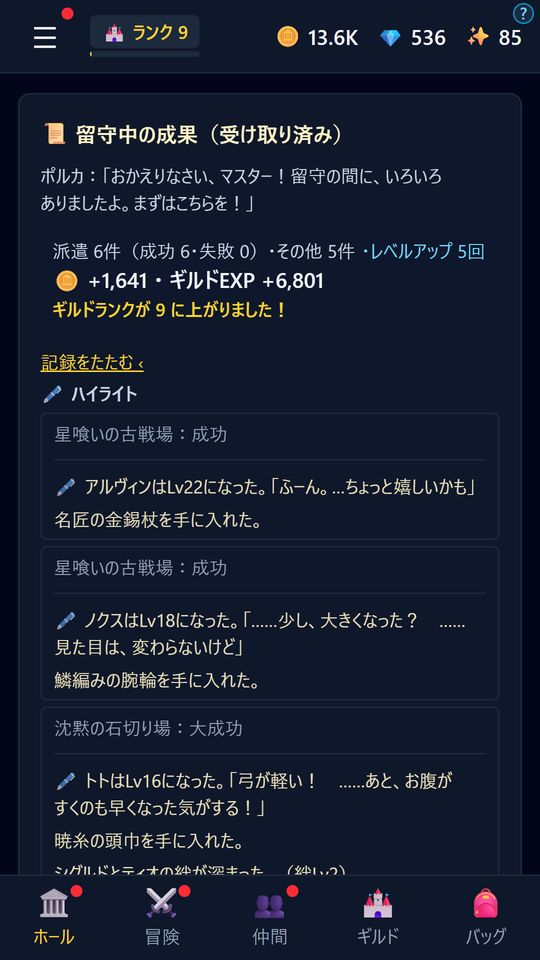
01
閉じていても冒険は進む
アプリを閉じている間も時間は流れ、派遣・製作・訓練・研究が進みます。すき間時間に1日数回ひらいて、結果を受け取り、次の指示を出すだけ。
くり返し派遣が続くのは、最後に開いてから4時間まで（ジェムや月額パスでのばせます）。ときどき開いてあげてください。

放置ギルドRPG ／ Android
閉じていても、冒険は続く。
落ちぶれたギルドを継ぎ、冒険者を送り出して物語を読み、百灯の塔に挑む放置RPG。
Google Play で近日公開公開のお知らせは X と Discord で

PROLOGUE
十年前、先代マスターは「虚ろの淵」へ向かったまま帰らなかった。
残されたのは、かすれた看板のギルド「暁の灯」と、一冊の不思議な本「クロニクル」だけ。
記録係見習いだったあなたは、看板を継いで新しいマスターになる。
冒険者を送り出し、時間が経てば、彼らは宝と物語を持ち帰ってくる。
HOW TO PLAY
世界地図から冒険先を選び、仲間を組んで派遣します。
アプリを閉じていても時間は流れ、冒険は進みます。
持ち帰った宝で仲間と施設を強くし、冒険日誌と物語を読み進めます。
FEATURES

01
アプリを閉じている間も時間は流れ、派遣・製作・訓練・研究が進みます。すき間時間に1日数回ひらいて、結果を受け取り、次の指示を出すだけ。
くり返し派遣が続くのは、最後に開いてから4時間まで（ジェムや月額パスでのばせます）。ときどき開いてあげてください。
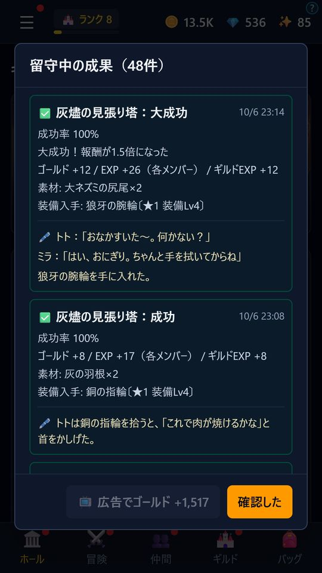
02
無鉄砲、慎重、お調子者、皮肉屋――性格ごとにセリフも冒険日誌の書きぶりも変わります。
一緒に冒険するほど絆が深まり、特定の二人の組み合わせでは、その二人だけの絆エピソードが読めます。
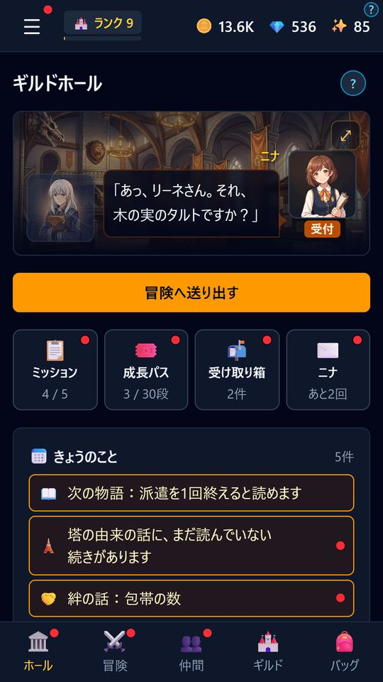
03
ホールの受付では、見習いのニナが冒険者たちと、ほのぼのとした掛け合いを見せてくれます。
話しかけたり派遣を続けたりすると「ニナとの仲良し」が進み、一人前の受付係をめざすニナの成長を見守れます。
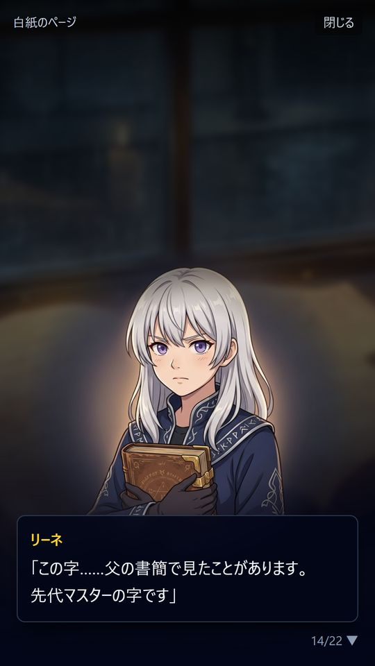
04
顔絵つきの会話で進む物語。先代マスターの行方と、虚ろの淵の謎を追います。
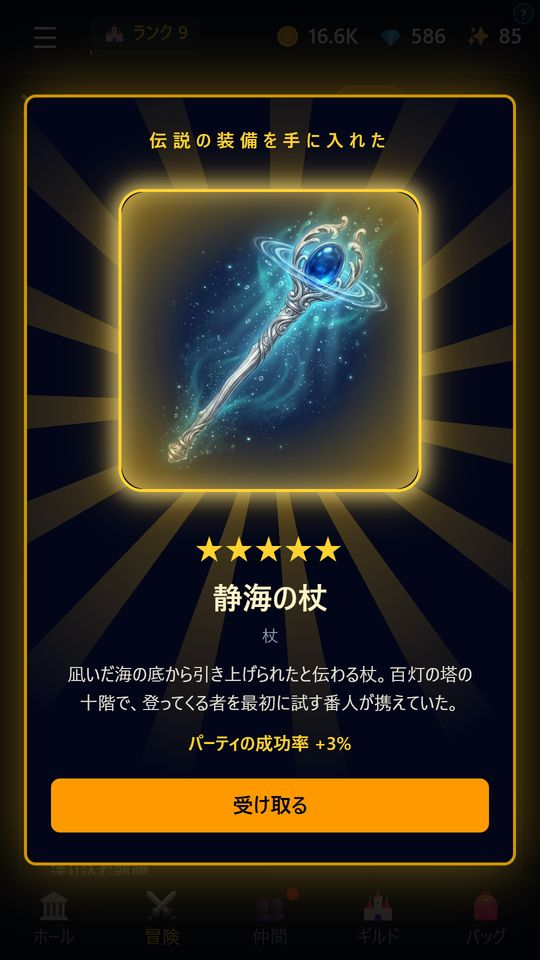
05
1階ずつ部隊を送り込み、消えた灯をともしていく古い塔。上の階ほど手強く、階ごとに属性や、性格・絆・職業を生かす条件があります。
10階ごとの番人を退けると、塔でしか手に入らない伝説の武器と、塔に残された記録を1つずつ。
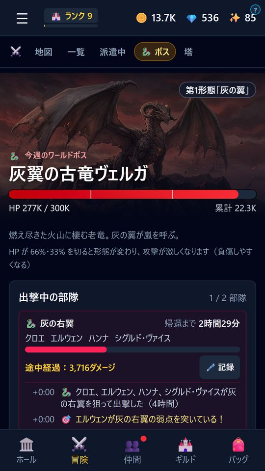
06
世界地図から冒険先を選んで派遣。週替わりの巨大ボスには、1週間かけて何度もパーティを送り込む長期戦。
長く戦わせるほど大きなダメージを与えられるけれど、負傷の危険も。
火・水・風・土・光・闇。職業と武器の属性を、塔の階やワールドボスの弱点に合わせて部隊を組みます。
日替わりと週のミッション、実績と称号。4週間ごとのシーズンの成長パスは、遊ぶほど段が上がります。
ログインは任意。百灯の塔とワールドボスの順位表、実績、クラウドセーブに対応しています。
装備の製作と強化、ギルド施設の増築、一人ひとりのスキルツリー、転職。少しずつ、あなたのギルドを大きくしていきます。
ADVENTURERS
物語の中で仲間になる人のほかに、主に特別招待で出会う仲間も。性格ごとに、セリフも冒険日誌の書きぶりも変わります。

ニナ受付
ギルド「暁の灯」の受付の見習い。冒険者たちを送り出し、帰りを待つ。
「ほうき、よし。ぞうきん、よし。受付の笑顔……よしっ！」

トト狩人
樵の祖父に育てられた、森育ちの弓使い。食べられる物を見分ける目は確か。
「マスター、今日のごはんは？」

ミラ僧侶
トトと同じ村の出身。薬師の母から、薬草と祈りの手当てを教わった。
「トト、また怪我して！」

リーネ魔術師
十年前に淵へ入った精鋭の魔術師の一人娘。父の名前を探している。
「父の名前が、その本に載っているはずです」

エルウェン狩人
琥珀樹の迷い森の守り手。百年あまり森の見回りだけをして暮らしてきたエルフ。
「森が泣いてる。理由はそれで十分」

バルド騎士
若いころ先代と出会い、二人で暁の灯を大きくした、かつての副団長。
「……灯は、まだ消えていなかったか」

オズワルド僧侶
聖鐘教会の司祭。大聖堂の記録庫で、ある記録の秘密を知った。
「神は沈黙している。だから私が喋る」

シグルド剣士
ヴェルナの貧民街で育ち、剣の腕ひとつで名を上げた若き剣士。
「俺が信じた天秤は、こんな重さじゃなかった」
SCREENS
横に送って見られます。
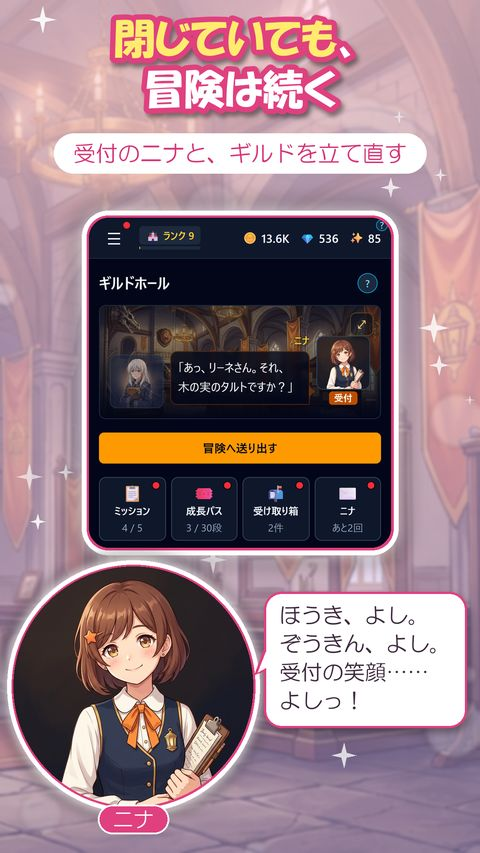
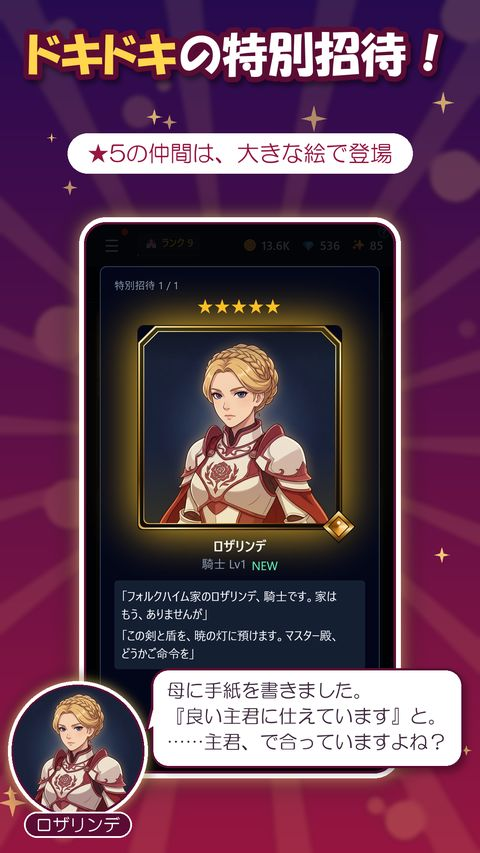
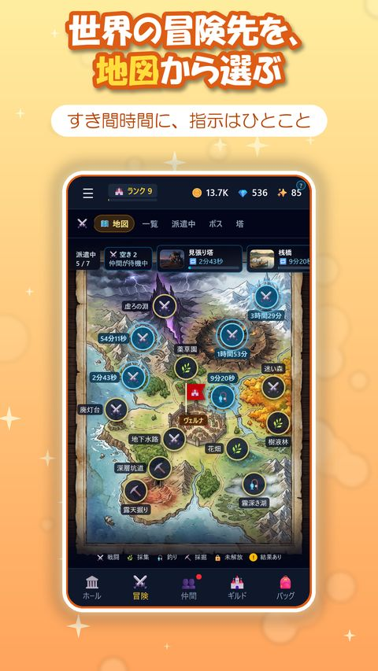
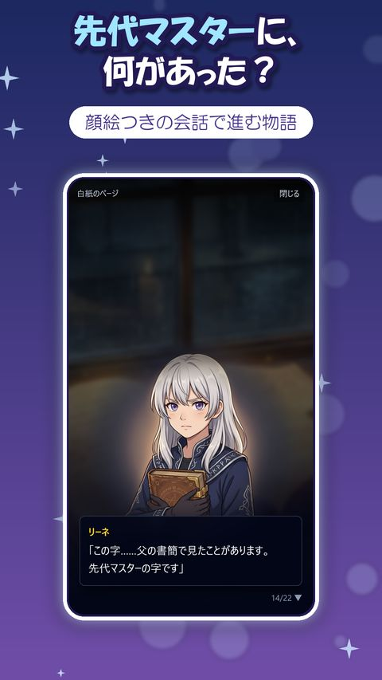
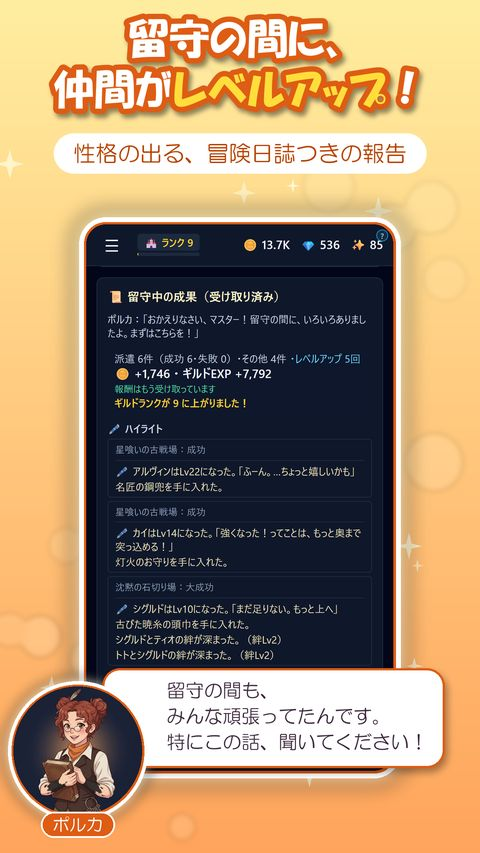
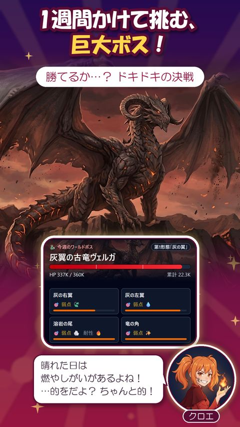
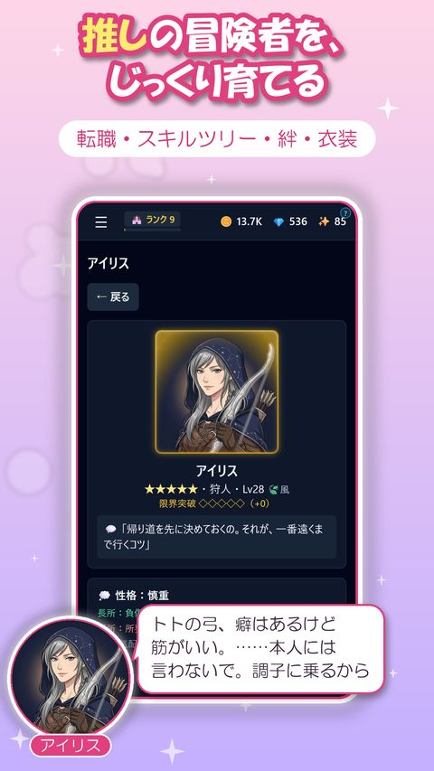
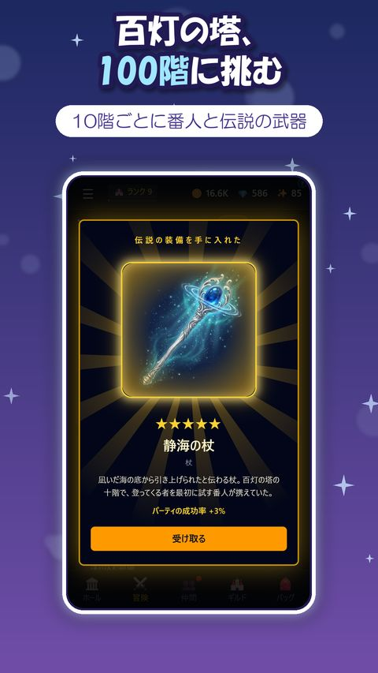
INFO
NEWS
COMMUNITY
深淵のクロニクル ～放置ギルド物語～
閉じていても、冒険は続く。
Google Play で近日公開公開のお知らせは X と Discord で